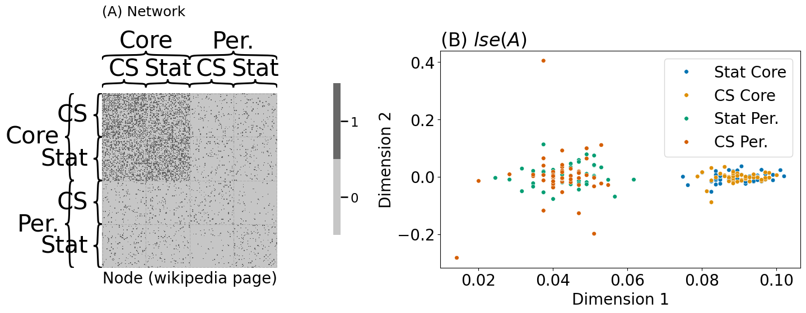
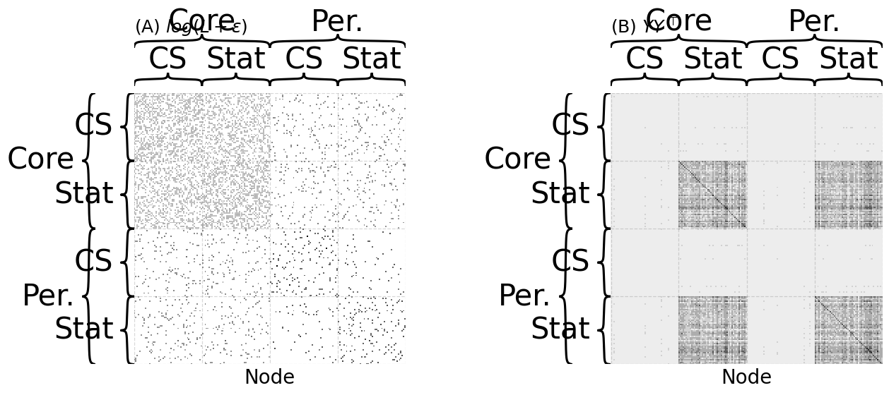
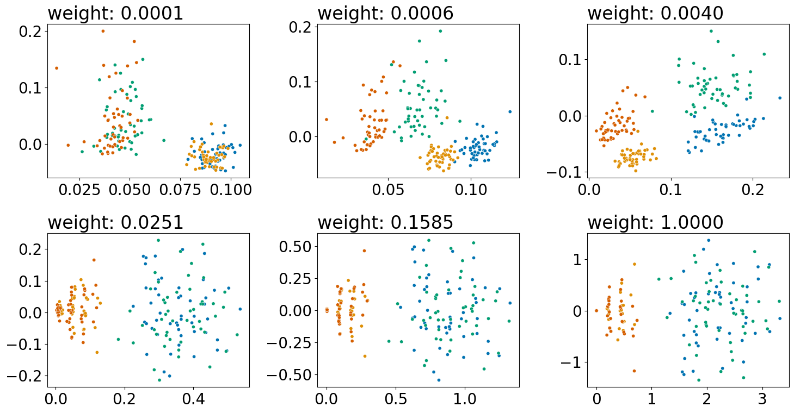

5.6 Joint representation learning#
mode = "svg"
import matplotlib
font = {'family' : 'Dejavu Sans',
'weight' : 'normal',
'size' : 20}
matplotlib.rc('font', **font)
import matplotlib
from matplotlib import pyplot as plt
from graspologic.simulations import sbm
import numpy as np
n = 200 # total number of nodes
# first two communities are the ``core'' pages for statistics
# and computer science, and second two are the ``peripheral'' pages
# for statistics and computer science.
B = np.array([[.4, .3, .05, .05],
[.3, .4, .05, .05],
[.05, .05, .05, .02],
[.05, .05, .02, .05]])
# make the stochastic block model
np.random.seed(0)
A, labels = sbm([n // 4, n // 4, n // 4, n // 4], B, return_labels=True)
# generate labels for core/periphery
co_per_labels = np.repeat(["Core", "Per."], repeats=n//2)
# generate labels for statistics/CS.
st_cs_labels = np.repeat(["Stat", "CS", "Stat", "CS"], repeats=n//4)
from graspologic.embed import LaplacianSpectralEmbed as lse
Xhat = lse(n_components=2, svd_seed=0).fit_transform(A)
from graphbook_code import heatmap, plot_latents
import os
import seaborn as sns
fig, axs = plt.subplots(1, 2, figsize=(15, 6))
comb_labels = ["{:s} {:s}".format(a, b) for a, b in zip(st_cs_labels, co_per_labels)]
heatmap(A.astype(int), inner_hier_labels=st_cs_labels, outer_hier_labels=co_per_labels, ax=axs[0],
title="(A) Network", xtitle="Node (wikipedia page)", title_pad=100)
plot_latents(Xhat, labels=comb_labels, ax=axs[1], s=30, title="(B) $lse(A)$", palette=sns.color_palette("colorblind", 4))
axs[1].set_xlabel("Dimension 1"); axs[1].set_ylabel("Dimension 2")
plt.tight_layout()
fig.tight_layout()
os.makedirs("Figures", exist_ok=True)
fname = "casc_net"
if mode != "png":
os.makedirs(f"Figures/{mode:s}", exist_ok=True)
fig.savefig(f"Figures/{mode:s}/{fname:s}.{mode:s}")
os.makedirs("Figures/png", exist_ok=True)
fig.savefig(f"Figures/png/{fname:s}.png")

trial = []
for label in st_cs_labels:
if "Stat" in label:
# if the page is a statistics page, there is a 50% chance
# of citing each of the scholars
trial.append(np.random.binomial(1, 0.5, size=20))
else:
# if the page is a CS page, there is a 5% chance of citing
# each of the scholars
trial.append(np.random.binomial(1, 0.05, size=20))
Y = np.vstack(trial)
def embed(X, d=2, seed=0):
"""
A function to embed a matrix.
"""
np.random.seed(seed)
Lambda, V = np.linalg.eig(X)
return V[:, 0:d] @ np.diag(np.sqrt(np.abs(Lambda[0:d])))
def pca(X, d=2, seed=0):
"""
A function to perform a pca on a data matrix.
"""
X_centered = X - np.mean(X, axis=0)
return embed(X_centered @ X_centered.T, d=d, seed=seed)
Y_embedded = pca(Y, d=2)
from graphbook_code import lpm_heatmap
fig, axs = plt.subplots(1, 2, figsize=(12, 6), gridspec_kw={"width_ratios": [1, 1.5]})
lpm_heatmap(Y, ax=axs[0], title="(A) Covariates $Y$", xtitle="Statistician", xticks=[0.5, 19.5],
xticklabels=[1, 20])
plot_latents(Y_embedded, labels=comb_labels, ax=axs[1], s=30, title="(B) $pca(Y)$", palette=sns.color_palette("colorblind", 4))
axs[1].set_xlabel("Dimension 1"); axs[1].set_ylabel("Dimension 2")
fig.tight_layout()
fname = "casc_covs"
if mode != "png":
fig.savefig(f"Figures/{mode:s}/{fname:s}.{mode:s}")
fig.savefig(f"Figures/png/{fname:s}.png")
/opt/hostedtoolcache/Python/3.12.9/x64/lib/python3.12/site-packages/matplotlib/cbook.py:1719: ComplexWarning: Casting complex values to real discards the imaginary part
return math.isfinite(val)
/opt/hostedtoolcache/Python/3.12.9/x64/lib/python3.12/site-packages/matplotlib/cbook.py:1719: ComplexWarning: Casting complex values to real discards the imaginary part
return math.isfinite(val)
/opt/hostedtoolcache/Python/3.12.9/x64/lib/python3.12/site-packages/pandas/core/dtypes/astype.py:133: ComplexWarning: Casting complex values to real discards the imaginary part
return arr.astype(dtype, copy=True)
/opt/hostedtoolcache/Python/3.12.9/x64/lib/python3.12/site-packages/pandas/core/dtypes/astype.py:133: ComplexWarning: Casting complex values to real discards the imaginary part
return arr.astype(dtype, copy=True)
from graspologic.utils import to_laplacian
# compute the network Laplacian
L_wiki = to_laplacian(A, form="DAD")
# log transform, strictly for visualization purposes
L_wiki_logxfm = np.log(L_wiki + np.min(L_wiki[L_wiki > 0])/np.exp(1))
# compute the node similarity matrix
Y_sim = Y @ Y.T
fig, axs = plt.subplots(1, 2, figsize=(14, 6))
heatmap(L_wiki_logxfm, ax=axs[0], title="(A) $log(L + \\epsilon)$",
xtitle="Node", cbar=False, inner_hier_labels=st_cs_labels, outer_hier_labels=co_per_labels)
heatmap(Y_sim, ax=axs[1], title="(B) $YY^\\top$", cbar=False, xtitle="Node", inner_hier_labels=st_cs_labels, outer_hier_labels=co_per_labels)
fig.tight_layout()
fname = "casc_inputs"
if mode != "png":
fig.savefig(f"Figures/{mode:s}/{fname:s}.{mode:s}")
fig.savefig(f"Figures/png/{fname:s}.png")

from graspologic.embed import AdjacencySpectralEmbed as ase
def case(A, Y, weight=0, d=2, tau=0, seed=0):
"""
A function for performing case.
"""
# compute the laplacian
L = to_laplacian(A, form="R-DAD", regularizer=tau)
YYt = Y @ Y.T
return ase(n_components=2, svd_seed=seed).fit_transform(L + weight*YYt)
embedded = case(A, Y, weight=.002)
weights = np.logspace(-4, 0, num=6)
fig, axs = plt.subplots(2, 3, figsize=(15, 8))
for weight, ax in zip(weights, axs.flat):
embedded = case(A, Y, weight=weight)
plot_latents(embedded, title="weight: {:.4f}".format(weight),
ax=ax, s=20, labels=comb_labels, palette=sns.color_palette("colorblind", 4))
ax.get_legend().remove()
fig.tight_layout()
fname = "case_outputs"
if mode != "png":
fig.savefig(f"Figures/{mode:s}/{fname:s}.{mode:s}")
fig.savefig(f"Figures/png/{fname:s}.png")

from graspologic.embed import CovariateAssistedEmbed as case
embedding = case(alpha=None, n_components=2).fit_transform(A, covariates=Y)